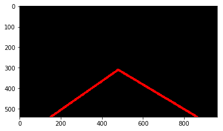
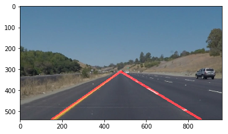
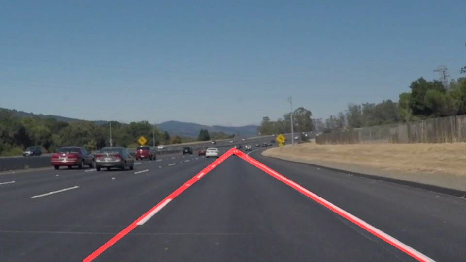
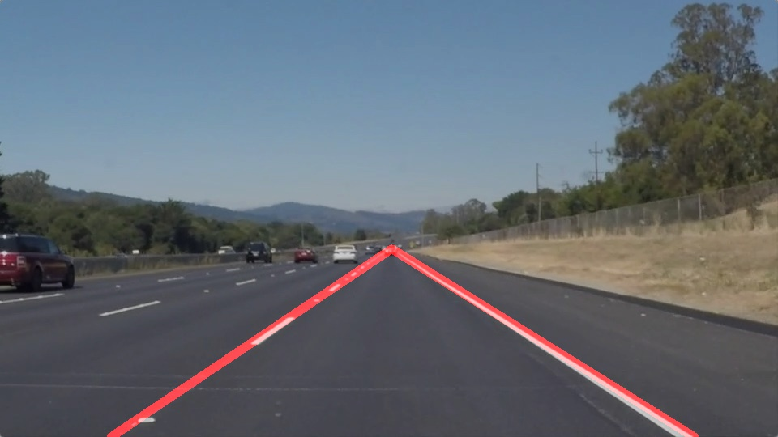
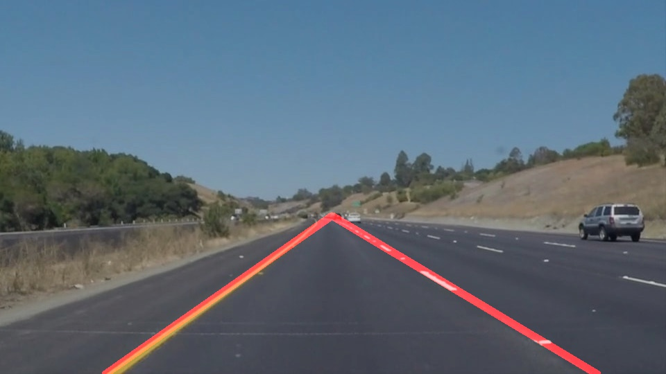
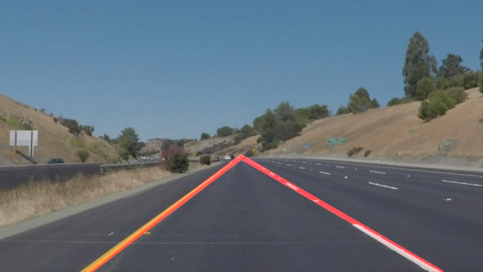
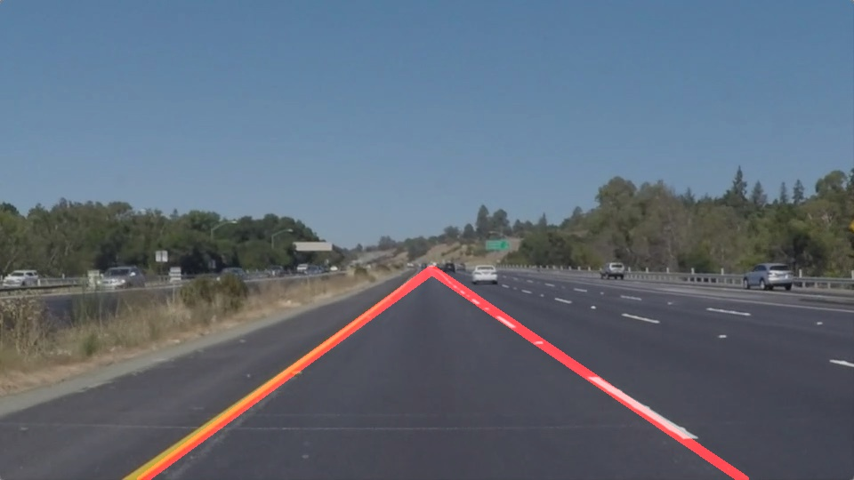
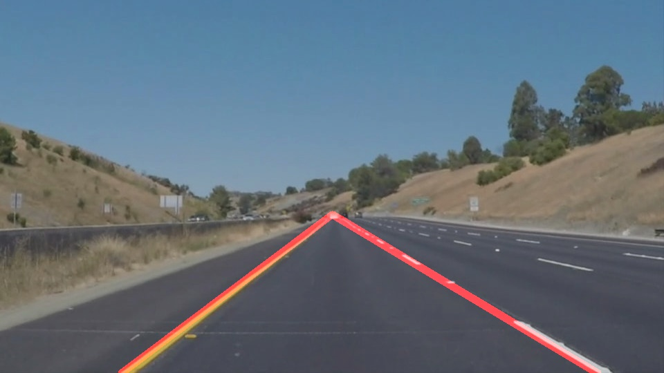
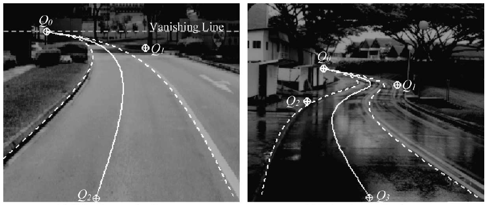

**Finding Lane Lines on the Road**
The goals / steps of this project are the following:
* Make a pipeline that finds lane lines on the road
* Reflect on your work in a written report
**Reflection**
### 1. Describe your pipeline. As part of the description, explain how you modified the draw_lines() function.
My pipeline consisted of 5 steps:
Step 1. Convert image to grayscale
Step 2. Apply a Gaussian blur to grayscale
Step 3. Apply Canny edge detection
Step 4. Use mask to reduce unnessary edges
Step 5. Apply Hough Transform
[image1]: ./result_image/01_edge.png "Edges"
[image1]: ./result_image/02_line_edge.png "Line Edges"
[image1]: ./result_image/03_out_image.png "Output Image"



Output Images






Output Videos
solidWhiteRight.mp4
solidYellowLeft.mp4
challenge.mp4
### 2. Identify potential shortcomings with your current pipeline
One potential shortcoming would be what would happen when it uses straight line to detect or mask curve lane.
### 3. Suggest possible improvements to your pipeline
A possible improvement would be to use B-Snake to do Lane detection and tracking.
Paper: Lane detection and tracking using B-Snake
authors: Yue Wang, Eam Khwang Teoh, Dinggang Shen
http://citeseerx.ist.psu.edu/viewdoc/download?doi=10.1.1.106.6644&rep=rep1&type=pdf
